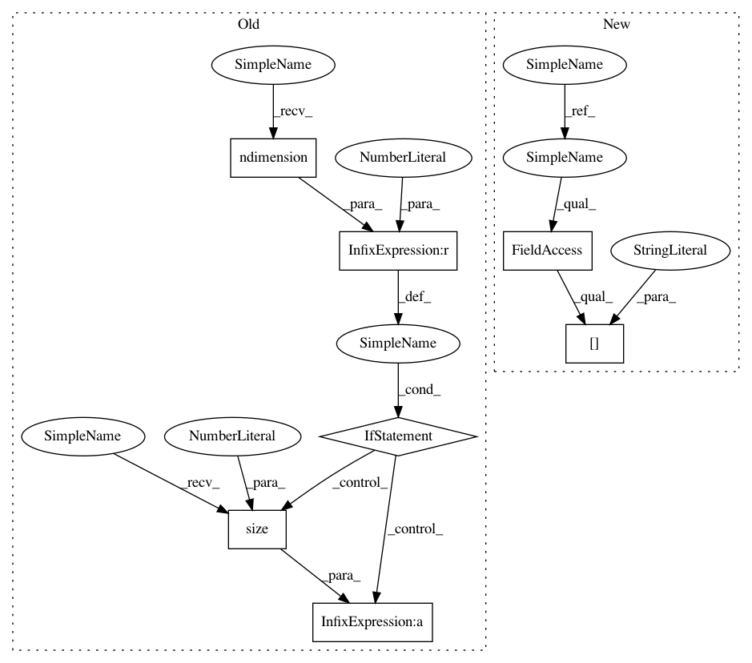

6bf26a0ab5c0ea9e332216d1d48d4ce3c03a2f8d,gpytorch/kernels/kernel.py,Kernel,size,#Kernel#Any#Any#,196
Before Change
def size(self, x1, x2):
non_batch_size = (x1.size(-2), x2.size(-2))
if x1.ndimension() == 3:
return torch.Size((x1.size(0),) + non_batch_size)
else:
return torch.Size(non_batch_size)
@abstractmethod
def forward(self, x1, x2, diag=False, batch_dims=None, **params):
Computes the covariance between x1 and x2.
After Change
def size(self, x1, x2):
non_batch_shape = torch.Size([x1.size(-2), x2.size(-2)])
return x1.shape[:-2] + non_batch_shape
@abstractmethod
def forward(self, x1, x2, diag=False, batch_dims=None, **params):
In pattern: SUPERPATTERN
Frequency: 4
Non-data size: 7
Instances
Project Name: cornellius-gp/gpytorch
Commit Name: 6bf26a0ab5c0ea9e332216d1d48d4ce3c03a2f8d
Time: 2019-03-20
Author: jake.gardner@uber.com
File Name: gpytorch/kernels/kernel.py
Class Name: Kernel
Method Name: size
Project Name: cornellius-gp/gpytorch
Commit Name: 5353ed4a85d28cfbf3aa78b0c177e7f6ba80b2a5
Time: 2019-04-12
Author: gpleiss@gmail.com
File Name: gpytorch/means/constant_mean_grad.py
Class Name: ConstantMeanGrad
Method Name: forward
Project Name: cornellius-gp/gpytorch
Commit Name: 487ec4eacee294bf9ff630fc06db22fa19331b51
Time: 2019-04-11
Author: gpleiss@gmail.com
File Name: gpytorch/means/constant_mean_grad.py
Class Name: ConstantMeanGrad
Method Name: forward
Project Name: cornellius-gp/gpytorch
Commit Name: 2741c7f1ba7a2d21ee9dfad4905740ff1024d3db
Time: 2019-04-09
Author: jake.gardner@uber.com
File Name: gpytorch/kernels/rbf_kernel_grad.py
Class Name: RBFKernelGrad
Method Name: size